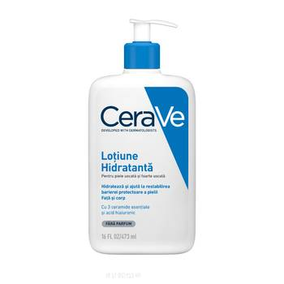
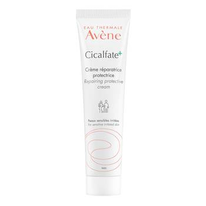
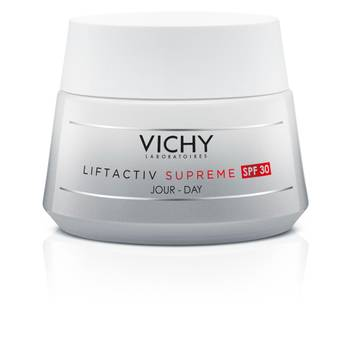
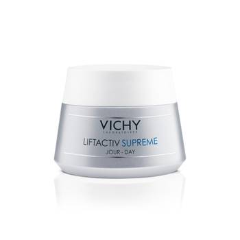
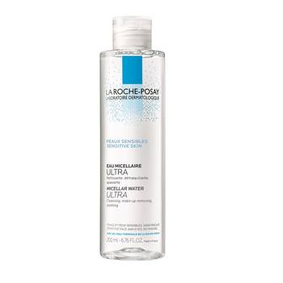
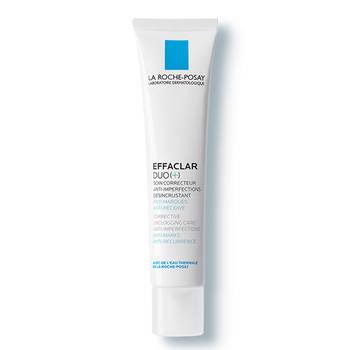

Concentrat corector pentru pori dilatati Sebium Pore Refiner, 30ml, Bioderma
Lotiune hidratanta pentru fata si corp piele uscata si foarte uscata, 473ml, CeraVe
Crema reparatoare si protectoare Cicalfate+, 40ml, Avene
Crema de zi lifting si fermitate SPF30 Liftactiv Supreme, 50ml, Vichy
Crema hidratanta pentru fata si corp piele uscata si foarte uscata, 177ml, CeraVe
Crema de zi antirid si fermitate pentru ten normal-mixt Liftactiv Supreme, 50ml, Vichy
Apa micelara ultra pentru piele sensibila, 200ml, La Roche-Posay
Tratament anti-imperfectiuni Effaclar Duo+, 40ml, La Roche-Posay